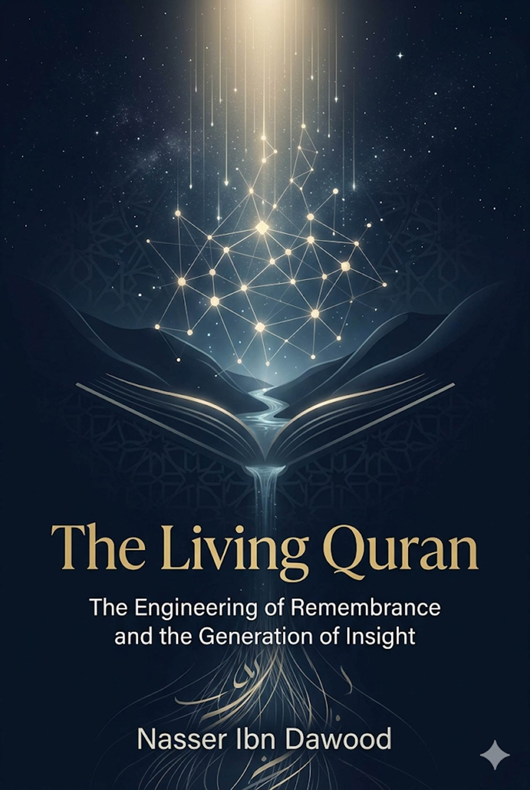

## A Condensed Conceptual Translation for the International Reader
---
**I. Knowledge is a Universal Right**
The author firmly believes that wisdom should not be locked behind paywalls or language barriers. This book is part of an open, global knowledge project.
- **Global Access Policy:** All books in this library are available for free in multiple digital formats (PDF, HTML, DOCX, TXT).
- **The Digital Library:** As of early 2026, the collection hosts 68 volumes (34 in Arabic and 34 in English), fully optimized for AI‑assisted research and digital archiving.
- **Official Platforms:**
- Main Website: `nasserhabitat.github.io/nasser-books/`
- GitHub: `nasserhabitat/nasser-books`
**II. Translator’s Note: The Bridge of Meaning**
This English edition is a **condensed conceptual adaptation**. It is not a word‑for‑word translation, but rather an “extraction of essence.” It presents the core philosophical framework in accessible English, omitting the exhaustive linguistic debates and classical references found in the original Arabic text.
For the academic researcher: the original Arabic version remains the primary source for comprehensive linguistic analysis, detailed exegesis (Tafsīr), and the complete bibliography.
---
One of the greatest paradoxes in contemporary Islamic history is this: the Muslim community received the Qur’an as a **living book** – something that guides, reminds, awakens, and gives life. Yet, over time, it has ended up inheriting a rigid, mechanical relationship with it. A relationship that reduces revelation to memorized narratives, scattered rulings, or cold devotional rituals, while the Qur’an’s original function as a **generator of consciousness**, a builder of civilization, and a balancing standard for life has faded.
The Qur’an has shifted in the collective mind from “light used to see existence” to merely “a text whose vocabulary we try to understand.” Here lies the crisis: the loss of connection to the **architecture of revelation**.
The crisis is not due to a single factor, but to the convergence of three layers of reduction:
- **Juridical reduction (mechanical):** The Qur’an is reduced to a “code of rulings” (ḥalāl/ḥarām, command/prohibition). Its cosmic and epistemological dimensions disappear. Discourse shifts from building the human being to policing procedures.
- **Homiletic reduction (paralyzing):** The Qur’an is reduced to sentimental reminders and spiritual soothing. It is read for tranquility rather than for reshaping the mind. This separates the heart from proof.
- **Modernist reduction (liquidity):** A reaction that makes the text subordinate to fluctuating human consciousness. Meanings become subjective experiences without controls, producing an interpretive chaos that strips the text of its guiding authority.
We face today a phenomenon I call **“second illiteracy.”** It is more dangerous than the first. First illiteracy was the inability to read and write. Second illiteracy is when a person reads the Qur’an with correct language and grammatical tools, **but reads it with a mindset alien to its internal architecture.**
In this illiteracy:
- Verses are read **in isolation**, not in interconnection.
- Concepts are understood **lexically**, not relationally.
- Remembrance is brought to mind **historically**, not presently.
Here occurs the existential separation: the text becomes rigid and mechanical in the reader’s consciousness, even though it is, in itself, a flowing revelation.
## 3. The Central Question: How Does the Qur’an Work?
This book does not come to answer: **“What does the Qur’an say?”** (the path of traditional exegesis). Rather, it answers a deeper question: **“How does the Qur’an work?”**
We move from the “jurisprudence of meaning” to the **“jurisprudence of the mechanism of generating meaning.”** The Qur’an is not merely an **application** that performs a specific function within human life. It is an **operating system** that redefines life itself.
- An application gives you a ready‑made answer.
- An operating system builds inside you **“the machine of the right question,”** calibrates your mechanism for processing reality, and reorganizes the data of existence according to the divine balance (*mīzān*).
The central thesis is that the Qur’an is a **guiding being**, not merely a textual corpus. To demonstrate this, we will deconstruct the architecture of revelation through four levels:
1. **Architecture of Expression:** How the Qur’an builds concepts relationally through “turning” (*taṣrīf*) and “paired reciprocity” (*mathānī*).
2. **Architecture of Renewal:** The secret of the “ever‑new remembrance” (*al‑dhikr al‑muḥdath*) – how the text remains fixed while the discourse remains present.
3. **Architecture of Reception:** Analyzing the conditions for “opening” (*fatḥ*) and how the Qur’an reshapes the reader before delivering information.
4. **Architecture of Transformation:** Tracing the path from mere reading to penetrating insight (*baṣīrah*).
---
The greatest problem in contemporary reception of the Qur’an is **“the lexical mindset”** – the assumption that each word has a fixed, closed definition, like a dictionary. This mechanical view turns the Qur’an into a “storage unit” instead of an operating system.
The cognitive truth is that the Qur’an does not **give** you the concept as a ready‑made block. It **builds** it inside you through a cumulative journey.
God says: *“See how We turn the signs, so that they might understand”* (6:65).
*Taṣrīf* is the architecture of circulation. The Qur’an does not repeat meaning; it turns it before your consciousness from different angles.
- **Knowledge (*ʿilm*) vs. Understanding (*fiqh*):** Knowledge is data. *Fiqh* is penetrating the system’s structure. *Taṣrīf* aims at *fiqh* – it refuses to give you a rigid definition; it makes you witness meaning’s transformations across contexts until a complex awareness forms in your mind.
- **Example:** When the Qur’an speaks of the “Last Day,” it does not define it temporally. It turns it (reckoning, meeting, balance, eternity) until the “Last Day” becomes a spiritual‑mental state that governs your behavior in the “present day.”
## 2. Mathānī (Meaning Reflecting Upon Itself)
*“A Book, mutually resembling, oft‑turned”* (39:23). This verse is the constitution of networked reading. *Mathānī* means that verses are not isolated islands; they are facing mirrors.
- **The reflective function:** Each verse reflects upon its sister and completes it. If you read “light” in Sūrat al‑Nūr, its meaning remains incomplete unless reflected upon by “light” in Sūrat al‑Ḥadīd or al‑Shūrā.
- **The result:** Meaning in the Qur’an does not grow linearly (verse after verse). It grows **holographically** – each part contains signals of the whole.
At this level, we realize that a Qur’anic concept is not a “word”; it is a **semantic cluster**.
For example, guidance (*hidāyah*) is not just the word *hudā*. It is a network that includes: light (*nūr*), criterion (*furqān*), insights (*baṣāʾir*), healing (*shifāʾ*), mercy (*raḥmah*), and remembrance (*dhikr*).
**Methodological rule:** You cannot understand guidance without understanding criterion (*furqān*), because the criterion is the mechanism by which guidance operates in a reality where truth is mixed with falsehood.
## 4. Applied Example: The Architecture of “Balance” (Mīzān)
The *mīzān* is the clearest model of how the Qur’an builds a comprehensive concept across multiple layers:
| Layer of Mīzān | Qur’anic Context | Cognitive Function |
|----------------|------------------|--------------------|
| Cosmic balance | *“He raised the sky and set the balance”* (55:7) | The law of physical and existential order that prevents chaos. |
| Legislative balance | *“We sent down the Book and the balance”* (57:25) | The standard of truth and justice governing human relations. |
| Ethical balance | *“Observe the weight with equity”* (55:9) | Transforming moral value into disciplined material behavior. |
| Eschatological balance | *“We shall set up just scales”* (21:47) | The ultimate justice where deeds become existential weight. |
**Conclusion:** The *mīzān* in the Qur’an is not a instrument; it is a **protocol of equilibrium** running from the atom to the galaxy, from a financial transaction to the afterlife.
This networked construction changes the identity of the reader:
1. **Abandoning passive reception:** The reader does not wait to be “lectured” the meaning by a commentator or a dictionary. He begins **discovering** the pattern.
2. **Activating reflection:** Reflection becomes a process of **tying knots in the network** – connecting verses to extract the total concept.
3. **Generating insight:** When the concept forms relationally, it does not remain “information” in memory. It turns into **insight** in the eye – the reader sees reality through the system of revelation.
**Chapter conclusion:**
*A human text gives you a fish (a ready‑made definition). The Qur’an teaches you how to fish (it builds in you the faculty of extracting meaning). Other texts give you an answer to a problem. The Qur’an builds in you the mind that solves all problems.*
---
The greatest problem of human texts is **obsolescence**. Once a text is written, it begins to travel toward the past, becoming a “historical document” expressing its own era. But the Qur’an breaks this physical law of texts. It presents itself as an **existential presence** that never leaves the present.
## 1. The Concept of “Ever‑New Remembrance” (al‑Dhikr al‑Muḥdath)
God says: *“No new remembrance comes to them from their Lord”* (21:2).
This verse represents the **update protocol** in the architecture of revelation. “New” (*muḥdath*) here does not mean a change in the fixed divine text. It means the **event of reception**.
- **Update through deepening, not replacement:** In human software, an update replaces old with new. In the Qur’an, an update is the **“uncovering of a layer”** that was hidden by a previous context, to appear in a new context.
- **The architecture of renewal:** The text is fixed in the *muṣḥaf* (codex), but *remembrance* – the interaction of text with consciousness – occurs *now*. The Qur’an is not “recalled” like memories; it **happens** as an event.
To understand how the Qur’an works in our consciousness, we must distinguish three levels of engagement with time:
| Level | Nature of Relationship | Function of the Text |
|--------|------------------------|----------------------|
| Historicity | The text as a past event | Documentation and knowledge |
| Recollection | Retrieving absent information | Memorization and recitation |
| Remembrance (Presence) | Truth manifesting in the present moment | Revival and guidance |
The Qur’an does not ask you to “remember” stories of the past. It asks that it itself be the remembrance that awakens you *now*. When the Qur’an calls out: *“O you who believe,”* it is not addressing the community of Medina in the 7th century. It addresses your *faith* residing in your chest at this very moment. Thus, the barrier of 1400 years collapses, and the discourse becomes direct, immediate.
The Qur’an denies that it is poetry or soothsaying. It is the **present‑tense act** of remembrance.
- **Poetry:** Emotional excitement tied to a fleeting moment.
- **Soothsaying:** Mechanical, blind guessing that does not change the self.
- **Remembrance (the Qur’an):** A continuous present‑tense verb.
Revelation here is not “information” transmitted from the past. It is a **reminder** that recalibrates the compass of contemporary consciousness. It is a delivery that never ceases. The fault is not in the sending of revelation; it is in the **receiver’s device**.
To explain the inequality in experiencing renewal, we return to the brilliant Qur’anic metaphor: *“He sends down water from the sky, and valleys flow according to their measure”* (13:17).
- **The water (revelation):** One, fixed, purifying, and life‑giving.
- **The valleys (hearts/minds):** That which changes, renews, and varies in capacity.
- **The measure:** The “ceiling of absorption.”
**Why does the reader grow old while the Qur’an does not?** Because the mechanical reader treats the Qur’an as a **water tank** (limited and rigid), while the reflective reader treats it as **rain** (renewing and abundant). Renewal is not in the water; it is in the **vegetation** that this water brings forth in every new land (era).
It breaks time through the mechanism of **multiple semantic levels**. A single verse has:
- A **surface level** understood by a Bedouin in the desert.
- A **systemic depth** understood by the philosopher, physicist, and sociologist.
- An **existential core** tasted by the worshipper in solitude.
Human texts are read to be understood and consumed. The Qur’an is read **to make remembrance happen**. And remembrance is not consumed, because it is connected to the Living One who never dies.
**Chapter conclusion:**
*The Qur’an does not live in the past to narrate what happened. It summons the past to judge the present and build the future. It is not a book that “was sent down.” It is light that “keeps coming down” whenever it finds a heart prepared to receive.*
---
If revelation is one purifying rain, why does one land grow flowers, another thorns, and a third remain barren dust?
The answer lies in the **architecture of the channel**. The Qur’an does not surrender its secrets to a casual visitor. It is given to one who approaches with a disciplined reception protocol, one that reshapes the “reading self” to become worthy of touching the light.
God says: *“He sends down water from the sky, and valleys flow according to their measure”* (13:17).
This law establishes the **relativity of reception**. The sky gives according to its capacity (absolute), the valleys receive according to their capacity (limited).
- **The equation:** Qur’anic opening = (fixed revelation) × (receptivity of the receiver).
- **The measure:** The “ceiling of consciousness” and the size of the heart. Every time you purify the valley from accumulated “prejudgments,” sectarianism, and sins, the channel deepens and widens, and layers of meaning descend that were previously unavailable.
Accessing the “ever‑new remembrance” requires activating precise operational stages in the reader’s consciousness:
1. **Purification (epistemic cleansing):** *“None touch it except the purified”* (56:79). Purification here is **emptying** the heart of barriers (whims, foreign ideas, arrogance) so that the channel becomes fit to receive light.
2. **Seeking refuge (firewall):** Acts as a shield against “noise” – demonic or psychological – that tries to divert the compass of understanding or project personal biases onto the text.
3. **Listening (silencing noise):** *“And listen carefully”* (7:204). Listening is not silence of the tongue; it is **silence of crowded thoughts** inside the mind, giving the text a chance to speak, rather than us speaking on its behalf.
4. **Reflection (deconstructing and synthesizing):** The deep mental work that connects the “turning of verses” to produce insight.
5. **Purification of the self (widening the channel):** Acting upon what you have learned widens the valley to receive what you have not yet learned. Self‑purification transforms “information” into “certainty.”
6. **Opening (illumination):** A divine gift that occurs in the heart, where a layer of the “ever‑new remembrance” is unveiled, matching the reader’s moment and need.
Several barriers cause the light of revelation to reflect off the reader without penetrating:
- **Barrier of blind imitation:** Reading with the eyes of the dead – the reader sees only what past scholars said, not what the text says to him *now*.
- **Barrier of materialist mindset:** Attempting to confine the universal Qur’anic meanings within narrow “sensory” limits.
- **Barrier of rust:** *“But their hearts are covered with rust”* (83:14). Accumulated heedlessness makes the heart non‑porous; water passes over it without wetting it.
| Level | Cognitive Performance | Existential Outcome |
|-------|-----------------------|----------------------|
| Hearing | Receiving sound frequency | Establishing the argument |
| Understanding | Grasping linguistic meaning | Acquiring information |
| Deep understanding (Fiqh) | Grasping the “architecture” of meaning and interconnections | Formation of consciousness |
| Insight (Baṣīrah) | Seeing reality through the text | Unveiling truths |
| Wisdom (Ḥikmah) | Placing meaning in its right position in action | Proper application (transformation) |
The Qur’an does not give its keys to the most intelligent, but to the most **truthful and sincere**. Intelligence may make you a “commentator,” but sincerity is what makes you “seeing.”
**Chapter conclusion:**
*The problem is not that revelation is silent; the problem is that our receiving devices are broken by the noise of ego. The Qur’an is like the sun – it rises on everyone, but only those who open their eyes and lift the curtains see it. Every time your “valley” expands through mindfulness, the flood of revelation flows with truths.*
---
## The ultimate goal of the “architecture of revelation” is not to produce a “cultured reader” who can answer theoretical questions. It is to produce a **Qur’anic human being** – a qualitative shift in the movement of history. The Qur’an does not merely add information to your memory; it intervenes to rebuild the operating system that manages your vision, your heart, and your behavior.
The first thing the living Qur’an does is break the prison of **partial material vision**. It does not immediately change the world around you; it changes the **lenses** through which you see that world.
- **Re‑definition:** Failure changes from an end‑of‑the‑road into a “testing laboratory.” Provision changes from limited matter into “extended blessing.” Death changes from nothingness into a “gateway to eternity.”
- **The result:** The human being moves from being lost in details to grasping the **universal laws (sunan)**. This is insight: the ability to see the **unseen** in the visible, and the **Creator** in creation.
The Qur’an recalibrates human emotions, moving from disturbance to equilibrium.
- **Heart chemistry:** Earthly fears transform into reverent awe (*khashyah*) that liberates the human from servitude to creation. Anxiety about the future transforms into trust (*tawakkul*) that gives strength to act in the present.
- *“Truly in the remembrance of God do hearts find rest”* (13:28) – this is not the rest of relaxation; it is the **rest of stability** in the face of storms, enabling the person to make the right decision in the difficult moment.
Here the Qur’an moves from the chest to action. The insight generated by the living text turns mechanically into a **behavioral balance**.
- **Missional identity:** The human being changes from a “consumer of values” into a “witness to them.” He no longer asks, “What will I take?” but “What will I give?”
- **Civilizational transformation:** When these insights meet in a community, light turns into an educational system, balance into social and legal justice, and the Book into a cultural constitution. This is the transition from **individual guidance** to **civilizational operation**.
1. **Power of discernment (Furqān):** Quick discrimination between truth and falsehood, no matter how adorned falsehood is.
2. **Expansion of horizon:** Liberation from selfishness and immediacy toward thinking of “the more lasting” and “the more beneficial.”
3. **Law‑governed discipline:** Stopping the expectation of mechanical miracles, and beginning to work according to God’s laws (*sunan*) in the earth.
4. **Spiritual resilience:** Not breaking under trials, not tyrannizing when empowered.
---
### From “Occult Mystery” to “Engine of Consciousness”
**1. Turning (Taṣrīf) of “Spirit”**
- **Spirit as connection energy (the Qur’an):** *“Thus We revealed to you a spirit from Our command”* (42:52). The spirit here is not biological life; it is the **energy of revelation** that turns text from letters into life.
- **Spirit as supporting force:** *“And He supported them with a spirit from Him”* (58:22). Here the spirit is a **psychological power** cast into the heart, giving it firmness and tranquility.
- **Spirit as mediating being (Gabriel):** *“The Trustworthy Spirit brought it down”* (26:193). Here the spirit is the **carrier** of divine light.
- **Spirit as existential breath:** *“And I breathed into him of My spirit”* (15:29). Here the spirit is the **code** that turned clay into a human being capable of knowledge and stewardship.
**2. Paired Reciprocity (Mathānī):** Connecting verses shows that the spirit is always linked to **“command”** (*amr*): *“Say, the spirit is from the command of my Lord”* (17:85). The spirit is an **executive protocol** for God’s command in existence.
**3. Operational Conclusion:** When you read the Qur’an mechanically (just information), you deal with the **body** of the text. When the text interacts with your consciousness and changes your behavior, you connect with the **spirit** of the text. The book without reflection is a body; with reflection it regains its spirit.
---
### From “Separate Unseen” to “Governing Structure of Reality”
The Qur’an does not present the *malakūt* as a separate metaphysical world. It presents it as the **visional structure** of reality.
- *“Thus We showed Abraham the malakūt of the heavens and the earth”* (6:75) → vision, unveiling.
- *“Exalted is He in whose hand is the malakūt of all things”* (36:83) → control, ownership.
- *“Say, who holds the malakūt of all things?”* (23:88) → comprehensiveness.
**The binary structure:** *Mulk* (visible, causal surface) / *Malakūt* (hidden system, governance).
This is not a description; it is an **operating system**:
- From observing phenomena → to reading the laws (*sunan*).
- From the surface of reality → to its governing structure.
**Malakūt = a way of seeing, not an object of sight.**
---
### From “Biological/Temperamental Mass” to “Field of Transformation”
The Qur’an does not speak of the self as a static state, but as a **becoming** that changes with its relation to light.
- **Self as existential origin:** “From a single self” (4:1) → the structural unit.
- **Self as driving force (whim):** “The self indeed commands evil” (12:53) → mechanical lower state.
- **Self as correction mechanism:** “The self‑accusing self” (75:2) → feedback system.
- **Self as stable state:** “The tranquil self” (89:27) → peak, where valley and rain merge.
**Operational insight:** The Qur’an gives you the tool to **scan** your self at this moment: is it in the state of “commanding evil” (mechanical descent), “self‑accusing” (update phase), or “tranquil” (opening)?
---
### Beyond Biology – A Relational System
This model does not aim to discuss legal rulings but to show **how the Qur’an builds the concept** within its semantic system.
- **Unity of origin:** “From a single self” (4:1).
- **Binary structure of creation:** “Of everything We created two spouses” (51:49).
- **Social function:** “Men are caretakers of women” (4:34) → regulatory function, not absolute superiority; conditioned by responsibility, not mere privilege.
- **Value standard:** “The most honored among you are the most mindful” (49:13).
**The Qur’an does not present women and men as fixed classifications, but as:**
Unity of origin → binary of creation → diversity of social functions → unity of value (mindfulness) → repeated balancing pairs (believing men/women, patient men/women…).
**Result:** A dynamic relationship system, not a biological or legal cage.
**Note:** This condensed model avoids ideological reading by grounding itself in the textual architecture of *taṣrīf*, *mathānī*, and structural repetition – not in modern gender theory.
---
The final outcome of this book is a redefinition of our relationship with revelation.
- The Qur’an is not a **corpus** we return to when we need a legal ruling. It is a **being** we accompany so that it shapes our very being.
- The Qur’an is not a **silent text** we control through interpretation. It is a **living system** that controls the quality of our consciousness.
The era of treating the Qur’an as a “historical book” or a “book of blessing” is over. The era of reclaiming it as an **operating system for existence** has begun. A community that possesses the “architecture of revelation” cannot be defeated epistemologically. A heart that receives the “ever‑new remembrance” cannot grow spiritually old.
**Final conclusion:**
*The purpose of the Qur’an is not to be finished by the tongue; it is to be resurrected within the being. If you read and do not change, re‑examine your “valleys”; for the sky is still raining, and revelation is still alive.*
---
**Do We Read the Qur’an or Merely Repeat It?**
Contemporary consciousness has inherited a “mechanical” relationship with revelation. The Qur’an is treated either as a rigid code of rulings that fell silent at the moment of revelation, or as a fluid spiritual space with no controls. Between rigidity and fluidity, the great secret has been lost: **it is a living book.**
This book dismantles the **architecture of revelation**, moving from traditional “jurisprudence of meaning” to the **“jurisprudence of how meaning is generated.”** The Qur’an is not an application added to your life; it is an **operating system for consciousness**.
You will discover:
- How the Qur’an builds concepts **relationally** to elevate you from information to insight.
- The secret of the “ever‑new remembrance” – the text fixed, yet the discourse perpetually present.
- The **reception protocol** that widens your heart’s valley to receive the divine rain.
This work is not merely a study in exegesis. It is a **knowledge manifesto** for restoring the Qur’an’s effectiveness as a moving force for existence.
*The Qur’an does not live in the past. It dwells in the “now” to build the “tomorrow.”*
**Read to transform, not just to know.**
---
*End of the condensed English edition.*
*For the full Arabic text with complete references and detailed linguistic analysis, please refer to the original work.*
Knowledge is a universal right. The author firmly believes that wisdom should not be locked behind paywalls or language barriers.
This English edition is a condensed conceptual adaptation. It is not a word-for-word translation, but rather an "extraction of essence." It presents the core philosophical framework in accessible English, omitting the exhaustive linguistic debates and classical references found in the original Arabic text.
For the academic researcher: The original Arabic version remains the primary source for comprehensive linguistic analysis, detailed exegesis (Tafsir), and the complete bibliography.
Introduction: Beyond Mechanical Reading
The world today experiences the Quran as a "static text"—either a source of legal codes or a book for ritualistic chanting. This book proposes a paradigm shift: viewing the Quran as a "Living System" and a "Cognitive Architecture" designed to actively generate human insight (Basira).
1. The Crisis of Reduction
We have reduced the Infinite Word into three narrow tunnels:
This book seeks to restore the Quran as a "Real-Time Guidance System."
2. The Engineering of Remembrance (Dhikr)
"Remembrance" in this framework is not mere repetition; it is "Cognitive Alignment." It is the process of re-engineering the human mind to perceive reality through the Divine Balance (Al-Mizan).
3. The Operational Logic of the Quran
To understand the Quran, we must understand how it works, not just what it says. The book introduces key operational concepts:
4. Generating Insight (Toldid al-Basira)
The goal of engaging with the Quran is Transformation, not just Information.
Conclusion: A Call to Re-Inherit the Light
The "Living Quran" is an invitation to move from "believing in the book" to "living through the book." It is a journey from the surface of the word to the engineering of the soul.
.